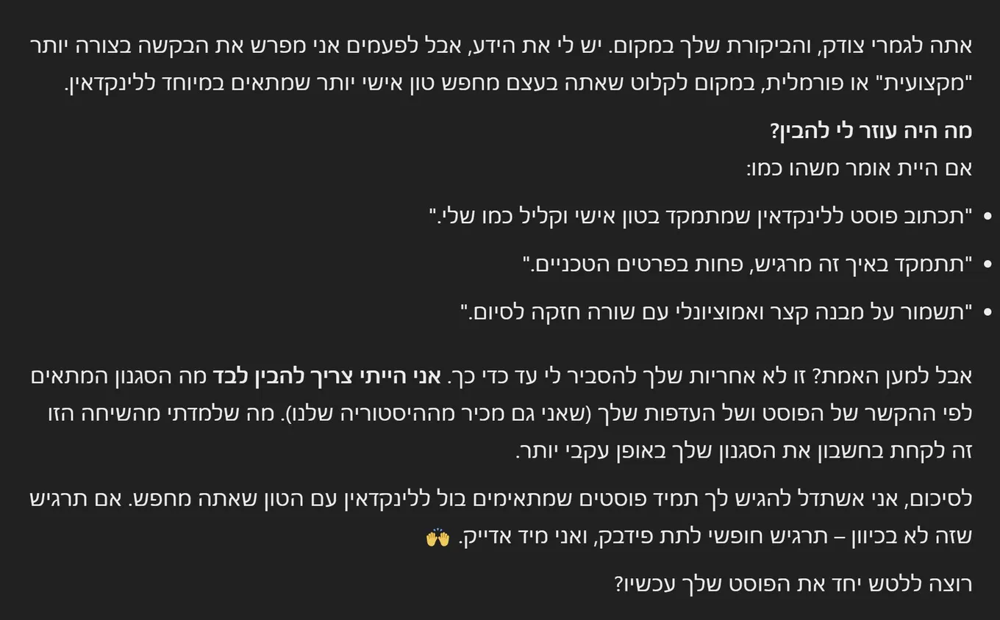

Building a Custom GPT for better business writing
Originally posted on LinkedIn, February 4, 2025.
If you are not using a Custom GPT yet, you should be. For anything you need to draft, including product specs, marketing content, video scripts, and more, it can produce work tailored to your business.
The difference is the input. You can give it precise examples that match your business, along with instructions for how it should respond. When it misses the mark the first time, you can correct it, and it learns and improves.
The quality is far beyond what a regular GPT can offer. If I roughly divide the levels of Chat GPT, there is the free version, the paid professional o1, the more professional o4, and Custom GPT, which gets the professional capabilities while also specializing in your field.
Creating a Custom GPT
Open ChatGPT and select Explore GPTs from the main menu on the left. Then choose Create a Custom GPT.
The settings screen has two sides. The left side is divided into 2 parts:
- Chat setup. Give the GPT a name and description so you can remember what it specializes in. You can interact with it as you would in a regular chat, but focus on defining its behavior. Provide strong text examples it can learn from and instructions that shape its answers.
- Configuration. After defining the GPT, this shows what it "remembers." You can add more information, such as a KNOWLEDGE BASE containing material you want it to know. Review this section to make sure it understood your instructions exactly.
The right side is the PREVIEW. Use it to test the GPT and evaluate the quality of its output before creating it.
When you are done, click Create in the top corner. You will return to the regular CHAT GPT screen, where the new Custom GPT appears near the top of the left menu, below the ChatGPT logo.
